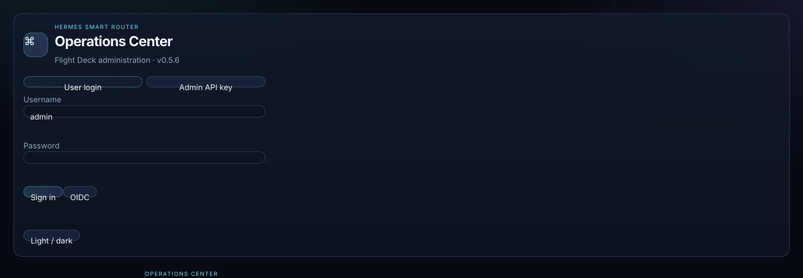
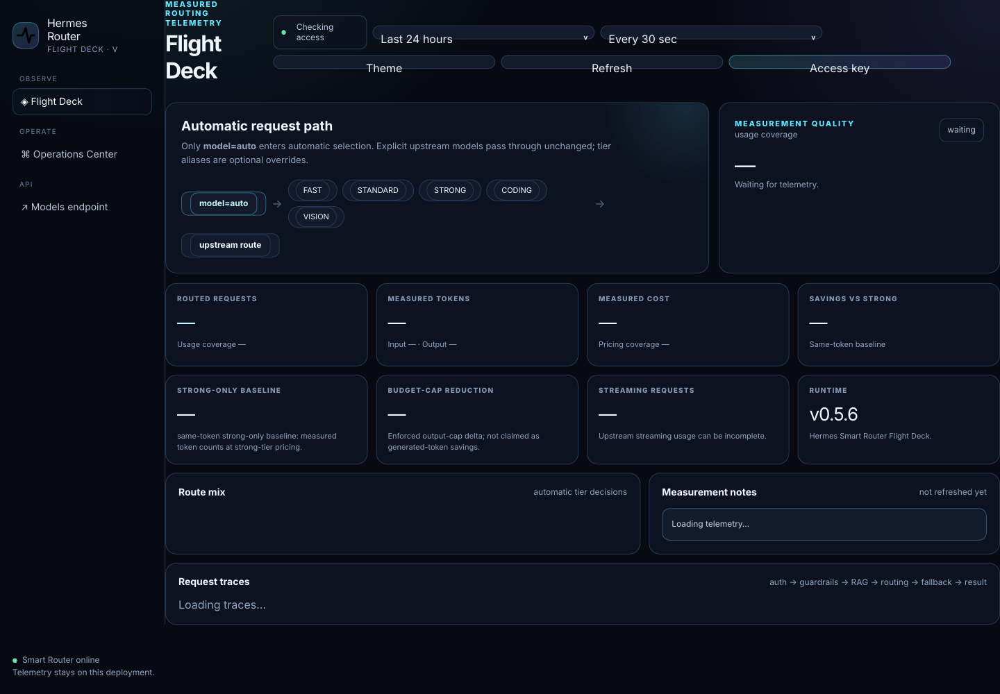

Hermes Linux Stack v0.5.6
Smart routing, hybrid RAG, request traces, guardrails, agents/teams, workflows, prompts, evaluations, access governance and controlled Linux operations in one stack.
Platform additions
Lexical + vector retrieval, reranking and pgvector acceleration.
Inspect routing, RAG, guardrails, retry/fallback and results.
Agent/Team graph registry, prompt versions and A/B datasets.
PostgreSQL, Redis, multiple router replicas, load test and HA smoke checks.
UI screenshots
Generated from the v0.5.6 UI shipped in this package.


Demo deployment
Use deploy/demo/docker-compose.v0.5.6.yml for a minimal authenticated demo, or smart-router/compose-ha-v0.5.6.example.yml for PostgreSQL/pgvector + Redis + two router replicas.
OIDC is the completed interactive login path in v0.5.6. LDAP/SAML/SCIM are connector foundations that need IdP-specific integration testing.